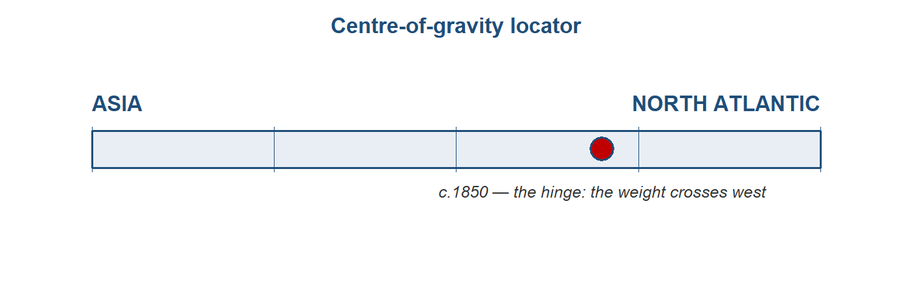

# The Great Divergence: when did it begin? (datasets_by_topic.md, Topic 7)
# 1. Load Broadberry et al. GDP-per-capita series (Britain, India, China, ~1600–1870).
# 2. Load Bairoch manufacturing-share series and Allen real-wage (welfare-ratio) series.
# 3. Plot each; mark the inflection year implied by each measure.
# 4. Show how the "start date" of the divergence shifts with the measure chosen — i.e. that
# measurement IS the debate. Note the wider error bands on the Asian series.The Great Divergence: the centre moves west
Preliminary draft — under review. Published for review; content, figures and citations may still change.
The hinge of the whole story — and its most open question. That the centre moved is not in doubt; when it moved, and why, is the book’s central debate.
Follow one thing: a bolt of cotton cloth
Follow a single bolt of cotton. In 1700 the finest cloth in the world was Indian — calico and chintz woven on hand looms in Bengal and on the Coromandel coast, so coveted in Europe that Britain and France banned it to protect their own weavers. A century and a half later the flow had reversed: cheap machine-spun cloth poured out of Lancashire and flooded the world, including India, whose hand-loom weavers it undercut in their own bazaars. The same product — cotton cloth — that had once measured Asian supremacy now measured its eclipse. This chapter is the story of that reversal, because the cloth carries the whole argument: the moment the centre of gravity of the world economy moved from Asia to the North Atlantic.1
1 Sources: Findlay & O’Rourke, Power and Plenty (2007), ch. 5; Parthasarathi, Why Europe Grew Rich and Asia Did Not (2011), on the calico bans. Read more: Riello, Cotton: The Fabric that Made the Modern World (2013); Beckert, Empire of Cotton (2014).
Where we are on the arc
Through Companies, coercion and the contest of the oceans, the centre of gravity still sat in Asia: India made perhaps a quarter of the world’s manufactures as late as 1750, and Europe was the armed, silver-bearing contestant, not yet the workshop. This chapter is the hinge. By 1850 the centre has moved to the North Atlantic — that much is uncontested. What is genuinely open, and what this chapter stages rather than settles, is when the move began and why — and whether Europe was ever structurally ahead before it happened. This is the topic on which the book’s whole “bounded anomaly” verdict turns, so we return to weigh it in the Conclusion: How strong is the spine?.2
2 Sources: the centre-of-gravity ledger, module_design/centre_of_gravity_ledger.md, Topic 7 (the pivotal entry); the module synthesis, module_design/11_synthesis.md, Q4. Read more: Pomeranz, The Great Divergence (2000), the book that named the debate.

The stage and the cast
The cast carries over from Companies, coercion and the contest of the oceans, but the roles reverse. Britain turns from a calico importer and armed contestant into the mechanised workshop of the world. India turns from the world’s cotton workshop into a deindustrialising periphery — its share of world manufacturing collapsing from roughly a quarter in 1750 to under 3% by 1880, the single headline reversal of the whole book. Qing China is the great parity comparator: the lower Yangzi delta tracked Europe’s leading regions until about 1700 before falling behind. Two newer western actors join: the United States South, whose enslaved-labour cotton plantations became the raw-fibre engine of Lancashire; and West Africa, whose story is the monetary mirror-image — a deindustrialisation worked through money rather than machines. And, as the foil that keeps the question honest, continental Europe: if it was simply “Europe,” why Britain and not France?3
3 Sources: Bairoch (1982) and Findlay & O’Rourke (2007), ch. 5, on the manufacturing-share reversal; Broadberry, Guan & Li (2018) on the Yangzi parity; Beckert (2014) on the US South; Green, A Fistful of Shells (2019), on West Africa. Read more: Parthasarathi (2011) on the India case.
TipDramatis personae
- Britain (since Companies, coercion and the contest of the oceans: transformed) — from armed contestant and calico importer to the mechanised “workshop of the world.”
- India (present every chapter; since Companies, coercion and the contest of the oceans: reversed) — from the world’s cotton workshop to a deindustrialising periphery; the chapter’s central case.
- Qing China (since The world becomes one — and stays Asian: changed) — the parity comparator that shadowed Europe’s leaders to ~1700, then diverged.
- The US South / the Atlantic slave-cotton complex (new) — the enslaved-labour raw-fibre engine; the New World “ghost acres” feeding mills the land of Britain could not.
- West Africa (new role) — deindustrialisation by monetary divergence (the parallel case).
- Continental Europe (France) — the foil for “why Britain, specifically?”
NoteHow we know — here the data is the debate
In every other chapter the evidence is sparse and we squeeze what we can from it. Here the problem inverts: there is a lot of evidence, and the disagreement is about which numbers to trust. The divergence is fought with rival reconstructions — Bairoch’s manufacturing shares, Broadberry’s historical national accounts, Allen’s real wages — and we have far richer series for Britain and Europe than for Asia. So “when did the divergence begin?” is partly an artefact of where we have data: the book’s running data-bias warning bites hardest precisely here, on the chapter that decides the whole argument. Two honesty checks set the tone. First, the Industrial Revolution itself was slower than legend — the Crafts–Harley reconstruction cut the headline growth rates sharply. Second, even the best Asian series get revised: the leading estimate of historical Chinese GDP was publicly challenged and restated. Treat every number in this chapter as a contested estimate, not a fact.
Sources: Crafts & Harley, “Output growth and the British Industrial Revolution: a restatement,” Economic History Review 45 (1992); Broadberry, Guan & Li (2018) and the subsequent “Further Concerns”/“Restatement” exchange in the Journal of Economic History. Read more: the data-survival-and-bias note, module_design/datasets_by_topic.md.
Inside the economies: three engines, and Britain’s is the new kind
Before the narrative, look inside — because the divergence is, at bottom, a story about three different economic engines. Britain was, on the standard account, a high-wage, cheap-coal economy: expensive labour and cheap energy made it profitable to adopt and to invent labour-saving, coal-burning machines. The lower Yangzi was the opposite — an “involutionary” economy of extraordinary labour intensity, absorbing ever more work-hours per acre for diminishing returns (by one comparison, labour intensity some eight times England’s, for output only nine times higher). India was a low-wage handloom proto-industry: genuinely competitive in world markets, but competitive on the basis of cheap labour, not mechanisation. The factor-price contrast is the cleanest single mechanism to teach — and, as we will see, the most contested.4
4 Sources: Allen, The British Industrial Revolution in Global Perspective (2009), on factor prices; on Yangzi involution, the discussion in von Glahn (2016) and Pomeranz (2000); on Indian proto-industry, Parthasarathi (2011). Read more: the contest over Allen’s mechanism — Kelly, Mokyr & Ó Gráda (2023), in the research-frontier section below.
The period on its own terms: how cotton turned around, 1750–1850
The reversal runs in five phases, from Indian primacy to a North-Atlantic workshop.5
5 Source: the five-phase framing follows the Topic 7 story spine, module_design/topic_07_story_spine_2026-06-19.md, built from Findlay & O’Rourke (2007), ch. 5, and Riello (2013).
6 Sources: Parthasarathi (2011) on the calico acts; Broadberry, Guan & Li (2018) on Yangzi parity. Read more: Riello (2013), part II.
Phase 1 (c.1700–1750) — The eve: India the workshop, parity at the top. Indian calicoes flood European markets; Britain legislates against them (1700, 1721) to shelter home weavers. The Yangzi delta still tracks Europe’s leading economies. No one is yet pulling away.6
Phase 2 (1750s–1780s) — Britain mechanises cotton. A cascade of textile inventions — Kay’s flying shuttle (1733), Hargreaves’s jenny, Arkwright’s water frame (1769), Crompton’s mule (1779) — meets Newcomen’s and then Watt’s steam engine, and coal turns the wheels. The effect on productivity is staggering: the operative-hours needed to process 100 lb of cotton fall from upwards of 50,000 by hand to around 2,000 on the early mule.7
7 Sources: Findlay & O’Rourke (2007), ch. 5, for the operative-hours series; standard accounts of the textile inventions. Read more: Allen (2009), chs 6–8, on why these inventions paid in Britain specifically.
8 Sources: Beckert (2014) on the slave-cotton complex; Pomeranz (2000) on “ghost acres”; Findlay & O’Rourke (2007) for the import figures. Read more: Beckert (2014), chs 3–5.
Phase 3 (1780s–1815) — The reversal gathers; the Atlantic engine fires. Raw cotton pours from the US South after Whitney’s gin (1793), grown by enslaved labour on New-World land that functioned as “ghost acres” Britain did not have at home. British raw-cotton imports leap from roughly 3,600 tonnes (1775) toward 27,000 tonnes (1800); cotton output triples. Britain flips from calico importer to the world’s dominant cloth exporter.8
Phase 4 (1815–1840s) — India deindustrialises; Lancashire floods the world. Productivity keeps climbing — operative-hours per 100 lb reach about 135 by 1825 — and by 1815 some 60% of British cotton textiles are exported. This is a productivity-driven terms-of-trade shock: Lancashire cloth undercuts Indian weavers in India. And coercion has teeth — the Permanent Settlement (1793), Company exports financed from Bengal’s land revenue, the end of the East India Company’s trade monopoly (India 1813, China 1833) — “free trade,” on British terms.9
9 Sources: Findlay & O’Rourke (2007), ch. 5; Parthasarathi (2011) and Beckert (2014) on coercion; on the deindustrialisation-as-terms-of-trade-shock mechanism, Clingingsmith & Williamson. Read more: the deindustrialisation debate in the Debate box below.
10 Sources: Findlay & O’Rourke (2007), ch. 5, for the cotton-import series; von Glahn (2016) on the Daoguang Depression and silver outflow. Read more: on the China shock, The first global economy: integration on colonial terms (the first global economy on colonial terms).
Phase 5 (1840s–1850s) — The centre has moved; China is cracked open. British raw-cotton imports run from ~220,000 tonnes (1840) to ~680,000 tonnes (c.1860); India’s share of world manufacturing falls below a tenth. China’s parity ends in the Daoguang Depression, with net silver flowing out from the late 1820s; the Opium War (1839–42) and the Treaty of Nanjing force it open. By 1850 the centre sits in the North Atlantic.10
Reading the period: the four questions
Direction (Q1) is the subtle one. The divergence is not a break in integration — the world keeps integrating across these decades — but a reversal of relative position within an integrating system. That carries the chapter’s distinctive fragility lesson: integration can hollow out a core, not only lift it. India was not cut off from the world economy; it was remade by it, on disadvantageous terms.11
11 Sources: O’Rourke & Williamson on integration-with-divergence; the module synthesis, module_design/11_synthesis.md, Q1. Read more: Williamson, Trade and Poverty: When the Third World Fell Behind (2011).
12 Source: Beckert (2014) on the Atlantic raw-material leg. Read more: Findlay & O’Rourke (2007), ch. 5.
Channels (Q2): the integrating circuit is now the cotton circuit — raw fibre in, manufactured cloth out, on terms Britain sets. Its raw-material leg is the Atlantic slave-sugar-cotton complex; the old overland channel is now marginal. The geography of the world economy has been re-plumbed around an Atlantic-and-Indian-Ocean manufacturing core.12
ImportantFollow the money — the silver thread pays off
Modes (Q3): goods lead now — the cotton reversal is the headline flow — and bullion is a good on its way to becoming money (the role-change completes in The first global economy: integration on colonial terms). But here the book’s “follow the silver” thread, running since The world becomes one — and stays Asian, finally pays off. Europe’s centuries as the monetary loser — shipping silver east to buy Asian goods it could not match — turn out to have been the making of it: Europe converted its monetary “loss” into armed trade, finance and navies. Up to 90% of British state revenue went on war; the European edge was fiscal-military power and organised violence as much as cheaper manufactures. West Africa is the parallel run in reverse: deindustrialisation by monetary divergence — the macuta sliding from 500 to 40 reais, some 30 billion cowries absorbed — money, not machines, doing the hollowing-out.
Sources: the silver thread note, module_design/silver_monetization_thread_2026-06-16.md; Green, A Fistful of Shells (2019), on West Africa; on the fiscal-military state, O’Brien and Findlay & O’Rourke (2007). Read more: the Introduction’s “bullion tracer, and why it flips”.
Europe (Q4) is the question this chapter exists to test — and the one period where the answer is genuinely “yes, Europe pulls ahead.” Why Britain? There is no settled answer, and the honest move is to teach the disagreement. One quartet of accounts explains the adoption of the new technology: Allen (factor prices — high wages plus cheap coal made machines pay); Pomeranz (resources — coal near at hand, plus New-World ghost acres); Mokyr (useful knowledge — an Industrial Enlightenment); Beckert (war capitalism — empire and slavery). A second quartet locates a deeper European peculiarity well before 1750: Mokyr (a culture of growth), Scheidel (the productive consequences of political fragmentation), Acemoglu & Robinson (inclusive institutions), Rubin (religion and the relation of rulers to clerics). The Parthasarathi twist keeps the spine honest: the divergence emerged from India’s cotton dominance — British mechanisation was in part a response to Indian competition — not in spite of it.13
13 Sources: Allen (2009); Pomeranz (2000); Mokyr, A Culture of Growth (2016); Beckert (2014); Scheidel, Escape from Rome (2019); Acemoglu & Robinson, Why Nations Fail (2012); Parthasarathi (2011). Read more: all are reviewed in the research-frontier section below; the author’s own Allen/Pomeranz notes slot in here.
14 Sources: Scheidel and Wrigley on the coal-energy transition; Findlay & O’Rourke (2007), ch. 5. Read more: Wrigley, Energy and the English Industrial Revolution (2010).
Forces. Technology leads — mechanisation, steam, coal — and the debate is really about what made invention and adoption happen here. Energy is the tell: English daily energy use rose from roughly 33,000 to 99,000 kcal per head, a jump sustained only by coal. Climate enters too, as a supply shock in parts of the Indian story.14
The verdict: where was the centre?
That the centre of gravity moves west by 1850 is uncontested. When and why it moved is genuinely open — and on the answer hangs the strength of this book’s spine. If the divergence was late and contingent (Pomeranz, Allen — parity until ~1750, then a coal-and-colonies accident), the “European dominance as anomaly” framing is stronger. If it was early and structural (Broadberry — India behind Britain by the 17th century, China diverging from ~1700), the framing is weaker. The reconciliation worth teaching is “late in outcome, earlier in roots”: the aggregate per-head gap opens late, but specific seeds — institutional, fiscal, demographic — run earlier. (Confidence: high on the move; the why is the debate — the ledger’s pivotal, deliberately-unresolved line, adjudicated at the Conclusion: How strong is the spine?.)15
15 Sources: centre-of-gravity ledger, module_design/centre_of_gravity_ledger.md, Topic 7; Broadberry, Custodis & Gupta (2015) and Broadberry, Guan & Li (2018) for the early-divergence case; Pomeranz (2000) and Allen (2009) for the late case. Read more: the Debate box below.
16 Sources: Crafts & Harley (1992) for the growth reconstruction; Broadberry, Guan & Li (2018) and Broadberry, Custodis & Gupta (2015) for the GDP ratios; Allen and Findlay & O’Rourke (2007) for the real-wage baskets. Read more: the quantity-vs-quality thread is set up in Deep structures: a world without a centre and closed in The Asian rebalancing: the arc resolves.
Then size it honestly. The Industrial Revolution was gradual: the Crafts–Harley reconstruction puts British growth at roughly 0.33% a year, with output expanding about 6.5-fold between 1700 and 1860. Cotton was the lead sector, not the whole economy; the dramatic headline hides a slow aggregate transformation. And note what kind of change this was. The per-capita divergence opens around 1700 — during the Asian empires’ aggregate apogee — which is why this is the chapter where the book’s quantity to quality thread finally resolves: the Great Divergence is the switch. “Success” stops meaning aggregate scale and starts meaning sustained income per head. By 1700 China sat at perhaps 55% of the European leader; India fell from over 60% of Britain’s GDP per head in 1600 to under 15% by 1871; a day’s wage around 1700 bought roughly four subsistence baskets in London but only one in Beijing, Canton or Edo.16
WarningThe debate: late and contingent, or early and structural?
This is the debate of the module. The California school (Pomeranz, Allen) argues for surprising parity between the most advanced regions of Europe and Asia as late as ~1750, with the divergence then opening fast on coal and colonies — late, contingent, and so a stronger case for European dominance as an anomaly. The historical-national-accounts camp (Broadberry and colleagues) reconstructs GDP series showing the gap opening earlier and more structurally — India behind Britain by the seventeenth century, China sliding from ~1700 — a weaker anomaly reading. Bound up with it are two further quarrels: why Britain (Allen’s factor-prices vs Mokyr’s knowledge vs Pomeranz’s resources vs Beckert’s empire — and the newer claim of Kelly, Mokyr & Ó Gráda that it was low wages plus mechanical skill, not high wages, that drove adoption); and deindustrialisation — was India’s handloom sector destroyed (Williamson, Beckert) or reorganised and partly resilient (Roy, Harnetty)? The book does not resolve any of these. It insists only that measurement is the debate: which series you trust decides which story you tell.
Sources: Pomeranz, The Great Divergence (2000); Allen (2009); Broadberry, Custodis & Gupta (2015); Broadberry, Guan & Li (2018); Kelly, Mokyr & Ó Gráda (2023); on deindustrialisation, Roy and Harnetty vs Williamson/Beckert. All cited in full below.
Data exhibit — follow the cloth: India’s deindustrialisation in numbers. Lay three series side by side, 1600–1880: India’s share of world manufacturing (~24.5% in 1750 to under 3% by 1880, Bairoch); India’s GDP per head relative to Britain (>60% in 1600 to <15% by 1871, Broadberry–Custodis–Gupta); and British cotton-cloth exports (surging from ~1815). Read together they turn “India was deindustrialised” from a slogan into a measured reversal — and show when each curve turns, which is the empirical heart of the timing debate. Caveats: the manufacturing-share and GDP series are reconstructed estimates with wide error bands, far better-grounded for Britain than for India; the manufacturing-share denominator (world output) is itself estimated. What you could do with this: plot the three series, mark the inflection years, and test how the “when did it begin?” answer moves as you swap Bairoch’s shares for Broadberry’s GDP — i.e. show that measurement is the debate.
Sources: Bairoch, “International Industrialization Levels from 1750 to 1980,” Journal of European Economic History 11 (1982); Broadberry, Custodis & Gupta (2015); Findlay & O’Rourke (2007), ch. 5. See the per-topic dataset entry in module_design/datasets_by_topic.md, Topic 7.
Threads forward
This is the chapter where the book’s threads converge. The centre-of-gravity spine reaches its hinge (the move west by 1850 — high confidence; the why left open for the Conclusion: How strong is the spine?). The quantity to quality thread resolves: the divergence is the switch from aggregate scale to income per head. And the “follow the silver” thread pays off — Europe’s monetary “loss” converted into power.17
17 Source: the threads are tracked in module_design/11_synthesis.md. Read more: the Introduction sets out all six.
18 Source: the arc, module_design/module_outline_2026-06-16.md, §6. Read more: The first global economy: integration on colonial terms.
Hand-off to The first global economy: integration on colonial terms: by 1850 the centre has moved, and in the next chapter this newly Euro-centred order globalises — the first price-integrated world economy, built on steam, the Suez Canal and indentured labour, and resting on the very Indian-Ocean periphery it now governs. The divergence made the dominance; the next chapter shows what the dominance was for.18
Classic research: the foundations
Long before “the Great Divergence” was named, economic historians argued about why Europe and why the Industrial Revolution — and the chapter’s modern debate descends directly from them.
- Weber (1905), The Protestant Ethic and the Spirit of Capitalism — the original culture-and-institutions account of European economic dynamism; the ancestor of Mokyr’s and Rubin’s arguments.
- Gerschenkron (1962), Economic Backwardness in Historical Perspective — relative backwardness and the varieties of industrialisation; reframed “catching up” as a process.
- Landes (1969), The Unbound Prometheus, and Landes (1998), The Wealth and Poverty of Nations — the influential (Eurocentric) technological-superiority account the California school was written against.
- E. L. Jones (1981), The European Miracle — the environment-and-politics case for Europe’s distinctiveness; the foil for Pomeranz.
- Bairoch (1982), “International Industrialization Levels from 1750 to 1980,” Journal of European Economic History 11: 269–333 — the manufacturing-share series (the ~24.5% to 3% India figures) that still anchors the descriptive picture.
- Crafts & Harley (1992), “Output growth and the British Industrial Revolution: a restatement,” Economic History Review 45(4): 703–730 — the reconstruction that showed the IR was slower than legend; the basis for this chapter’s “size it honestly.”
At the research frontier: recent cliometric work
The Great Divergence is one of the most active quantitative fields in economic history, and — unlike the ancient chapters — it is NBER/CEPR-central. A sweep of NBER, CEPR and RePEc, with the defining books, recent first:
- Kelly, Mokyr & Ó Gráda (2023), “The Mechanics of the Industrial Revolution,” Journal of Political Economy 131(1): 59–94 (CEPR DP 14884) — using county-level English data, argues industrialisation went with low wages and high mechanical skills, not Allen’s high wages, and that coal proximity and literacy don’t predict it. A direct, current challenge to the factor-price thesis. DOI · CEPR
- Broadberry, Guan & Li (2018), “China, Europe, and the Great Divergence: A Study in Historical National Accounting, 980–1850,” Journal of Economic History 78(4): 955–1000 — the GDP reconstruction placing the China–Europe divergence earlier than the California school allows; see also the subsequent “Further Concerns”/“Restatement” exchange (the field correcting itself in public). RePEc
- Allen (2015), “The high wage economy and the industrial revolution: a restatement,” Economic History Review 68(1): 1–22 — Allen defending the factor-price account against its critics; read alongside Kelly–Mokyr–Ó Gráda as the live exchange. Wiley
- Broadberry, Custodis & Gupta (2015), “India and the great divergence: An Anglo-Indian comparison of GDP per capita, 1600–1871,” Explorations in Economic History 55: 58–75 — the India series behind this chapter’s headline ratios. RePEc
- Mokyr (2016), A Culture of Growth (Princeton) — the Industrial-Enlightenment / culture account, now the leading “deep roots” alternative to factor-price stories.
- Allen (2009), The British Industrial Revolution in Global Perspective (CUP) — the high-wage/cheap-coal thesis in full; the most-cited single mechanism.
- Parthasarathi (2011), Why Europe Grew Rich and Asia Did Not (CUP) — the India-centred account: mechanisation as a response to Indian competition.
- Pomeranz (2000), The Great Divergence (Princeton) — the book that defined the debate (parity to ~1800; coal + New-World ghost acres).
NoteKeeping this current (verification gate)
Sweep run 2026-06-25 across NBER, CEPR, RePEc/IDEAS and Crossref; every entry above was citation-verified (DOI/RePEc/publisher URL). This is a fast-moving field — refresh before publication and never list an unverified working paper. Standing build note: integrate the author’s own (non-Kindle) Allen and Pomeranz reading notes into the Q4 “why Britain” paragraphs.
Questions for consideration
Essay / exam style — each rewards the four-questions toolkit and the live debate, not recall.
- Was the Great Divergence late and contingent or early and structural? Set out what evidence would decide it, and how far the available series actually let you.
- “India was deindustrialised, not outcompeted.” Discuss, distinguishing market forces from coercion, and the “destroyed” from the “reorganised” readings.
- Why Britain, and not France, China or India? Assess at least two of the four “why-the-West” accounts (Allen, Pomeranz, Mokyr, Beckert) against the evidence.
- “The Great Divergence is the moment ‘success’ changed meaning.” Explain, using the quantity-versus-quality distinction and the per-capita series.
- “Here the data is the debate.” Using the rival GDP and real-wage reconstructions, show how the answer to “when did the divergence begin?” depends on which series you trust — and on where we have data at all.
TipCross-cutting questions (collected at the end of the book)
Those this chapter feeds: - Quantity vs quality. Across The first world system: Rome was the customer, Asia the workshop, Companies, coercion and the contest of the oceans and The Great Divergence: the centre moves west, when is a “thriving” empire rich and when only big? Build the answer from aggregate-vs-per-capita evidence. - How bounded is the anomaly? Holding The Great Divergence: the centre moves west’s timing debate against The Asian rebalancing: the arc resolves’s partial return, how strong a version of “European dominance as anomaly” can the evidence support?
Data exercise
Key data
| Figure | Value | Source (to wire to references.bib) |
|---|---|---|
| India share of world manufacturing | ~24.5% (1750) to <3% (1880) | Bairoch 1982 / Findlay–O’Rourke 2007 |
| India GDP/cap vs Britain | >60% (1600) to <15% (1871) | Broadberry, Custodis & Gupta 2015 |
| China GDP/cap vs European leader | ~55% by 1700 | Broadberry, Guan & Li 2018 |
| Cotton operative-hours per 100 lb | >50,000 (hand) to ~2,000 (mule 1779) to 135 (1825) | Findlay–O’Rourke 2007 |
| British raw-cotton imports | 3,600 t (1775) to 27,000 t (1800) to ~680,000 t (c.1860) | Findlay–O’Rourke 2007 |
| English energy use per head/day | 33,000 to 99,000 kcal | Scheidel; Wrigley |
| IR aggregate growth | ~0.33%/yr; output ~6.5× (1700–1860) | Crafts–Harley 1992 |
| Real wage c.1700 (baskets/day) | ~4 London vs ~1 Beijing/Canton/Edo | Allen; Findlay–O’Rourke 2007 |
| West Africa monetary divergence | macuta 500 to 40 reais; ~30bn cowries | Green 2019 |
GDP and manufacturing-share figures are reconstructed estimates with wide error bands (better for Britain than for Asia) — presented as the substance of the debate, not as settled facts.
Further reading
- Core: Findlay & O’Rourke, Power and Plenty (2007), ch. 5; Pomeranz, The Great Divergence (2000); Allen, The British Industrial Revolution in Global Perspective (2009).
- Supplementary: Parthasarathi, Why Europe Grew Rich and Asia Did Not (2011); Riello, Cotton (2013); Beckert, Empire of Cotton (2014); Broadberry, Custodis & Gupta (2015).
- The debate: Kelly, Mokyr & Ó Gráda (2023) vs Allen (2015) on the high-wage thesis; Broadberry et al. (2018) vs the California school on timing; Roy/Harnetty vs Williamson/Beckert on deindustrialisation.